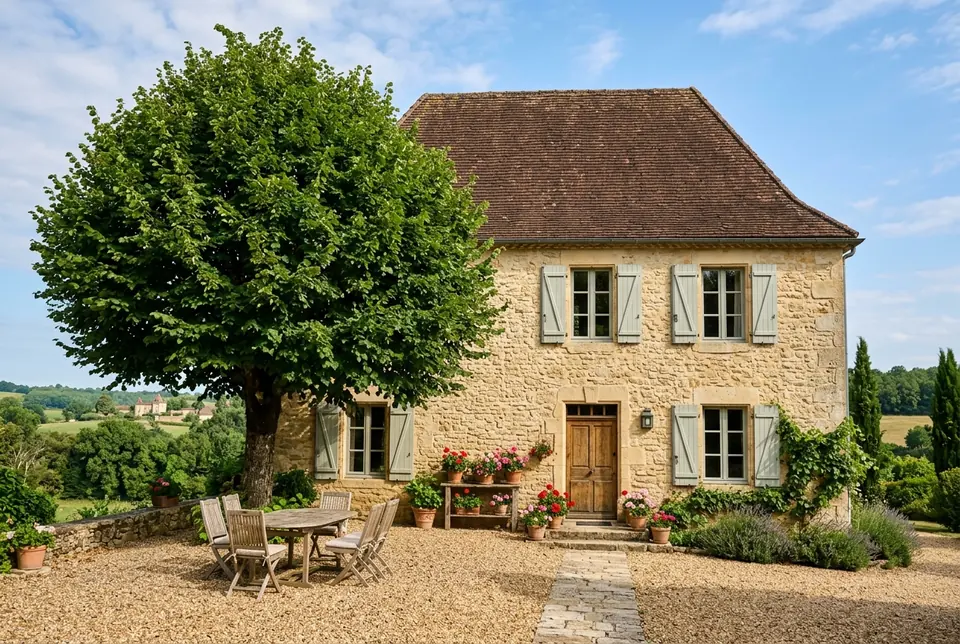

The area
Our favourite places around Bourdeilles
Bourdeilles sits in a loop of the Dronne, below its castle. Here are our favourite places, the ones we go to ourselves and send our friends to, each with a word from one of us.
Not to scale: each circle is a travel time from Le Tilleul.
To eat well
Bouyssou farm
Bourdeilles · 4 km · 6 min
A goat farm that makes its own cheeses and sells them on the spot.
Saturday mornings
“The goat’s cheese, to pick up on Saturdays.” Claire
See on the mapLe Moulin de l’Abbaye
Brantôme · 8 km · 12 min
A restaurant on the banks of the Dronne, facing the abbey.
“Their terrace over the Dronne, at lunchtime on weekdays.” Marc
See on the map
To get some fresh air
The cliff path
Bourdeilles · 700 m · 9 min walk
A 6 km loop at the foot of the limestone cliffs, between oak woods and meadows.
“Set off early, before the heat of the day.” Marc
See on the mapThe banks of the Dronne
Bourdeilles · 1.5 km · 20 min walk
A path along the river, in the shade of the alders, as far as the old mill.
“There is a ford where you can go for a swim.” Claire
See on the map
To visit
Bourdeilles castle
Bourdeilles · 1.2 km · 15 min walk
Two castles on the same rock, one medieval, the other Renaissance, high above the Dronne.
Open April to October
“Climb the keep late in the day: you can see the whole valley.” Marc
See on the mapBrantôme
8 km · 12 min
The abbey set against the cliff, and the Dronne flowing all around the village.
“Go round by canoe: you see the abbey from the water.” Claire
See on the mapOld Périgueux
Périgueux · 27 km · 30 min
The lanes of the old town around Saint-Front cathedral, and its flea market.
Flea market on the 1st Sunday of the month
“This is where to find old copper jam pans.” Claire
See on the mapSaint-Jean-de-Côle
30 km · 35 min
One of the most beautiful villages in France: its square, its castle and its humpback bridge.
“On Sunday morning, before the visitors arrive.” Marc
See on the mapHautefort castle
Hautefort · 60 km · 1 hr
A classical castle sitting on its hill, with its formal French gardens.
Open March to November
“The gardens alone are worth the trip, especially in June.” Marc
See on the map
With children
The Villars caves
Villars · 22 km · 28 min
Prehistoric paintings and halls of crystals, on a one-hour guided tour.
“Children love it. Bring a jumper: it is 13 °C inside.” Claire
See on the map
Markets
A market almost every morning.
- Mondayno market nearby
- TuesdayMareuil, morning
- WednesdayPérigueux, morning
- Thursdayno market nearby
- FridayBrantôme, morningRibérac, morning
- SaturdayPérigueux, morning
- SundayBourdeilles, morningJune to September
Season by season
When to come?
What’s on, season by season.
Spring
The meadows turn green again, the Dronne runs high, the gardens reopen. It is our favourite season for walking.
- Early June · Open gardens weekend (Rendez-vous aux jardins), nationwide
Summer
We swim at the ford and eat outside until nightfall. Book the Brantôme canoes early.
- Early August · The Mimos mime festival, Périgueux
Autumn
Ceps in the woods, walnuts on the table, and the morning mist over the river.
- Mid-September · European Heritage Days, nationwide
Getting here
Finding your way to us.
By car
From Périgueux, follow signs to Brantôme then Bourdeilles; rue du Pré starts from the village square, on the right after the church. Green gate, park in the courtyard.
Le Tilleul, 3 rue du Pré, 24310 Bourdeilles
By train
Périgueux station, 25 km away (30 minutes).
By plane
Bergerac airport, 75 km away (1 hr 10 min).
For everything else, opening times and tickets: the Brantôme en Périgord tourist office.

Our rooms
Le Tilleul, a place to drop your bags.
4 rooms · 2 to 4 people · from €85 a night, breakfast included